03 Chapter 03 — Sport Rules as Formal Systems
Pickleball and Rugby League grammar: state machines, event semantics, and what vision can never infer
3.1 Rules Are the Grammar of the Sport
Every rule citation below is source-backed (rule numbers read from the primary rulebooks in the Sources section), and every machine behavior is measured (lab output in experiments/c03-rules/outputs/state-machines.json). Where a rule cannot be verified from vision, the table in section 3.6 labels it explicitly.
Before any model, a practitioner must write down the rules formally. If you cannot express "the double-bounce rule" as a state transition, you cannot verify it. Later chapters — event classification, expected points, counterfactual simulation — consume this grammar.
The common failure is treating match events as independent observations. They are not. A pickleball third-shot drop is meaningful only relative to the two shots before it; a rugby league 5th-tackle kick is meaningless without the tackle count. Both sports are state machines; the state is the load-bearing variable.
Both governing bodies have, in effect, written executable specifications. The 2026 USAP rulebook's Appendix B requires rules to be "written with a deterministic focus, i.e., from the standpoint of 'if this occurs, this is what happens'" and to "avoid ambiguity, player discretion, or referee judgment-related rules." That is an event–condition–action (ECA) specification: every fault rule is named Fault – <trigger>, every replay Replay – <trigger>. The IRL laws read the same way: Section 11's play-the-ball protocol is an enumerated list of conditions (a)–(h) each with a prescribed consequence. Formally, both sports are (state, event) → (state', consequence) machines. The differences are state size, event triggers, and hidden state. Get the grammar right and everything downstream is a client of it. Get it wrong and every downstream number models a sport that does not exist.
3.2 Pickleball: The Complete Grammar
Pickleball is a point-terminating Markov chain: each rally begins with a serve and ends in a fault or a winner, and the score only moves through that termination. The grammar has five rule groups that any analysis system must encode:
- Serving (USAP 7.A–7.E): underhand, contact below the waist (7.C), behind the baseline; serve lands diagonally in the proper service court. Since 2026, a serve touching the net and clearing the NVZ is live (7.E); net-support contact is still a fault (13.B.1).
- Double-bounce: the serve must bounce on the receiving side, and the return on the serving side, before either team can volley. The rally becomes open only after both bounces.
- Non-Volley Zone (NVZ / kitchen) (USAP 3.A, 11.A): a 2.13m strip on each side of the net. Players cannot volley while standing in it or stepping into it, and cannot carry momentum into it after a volley. Foot placement on the 2-inch line during a volley is a fault. Full geometry in section 3.2b.
- Scoring (USAP 4.A, 4.B, 5.B, 6.B.2): games to 11, win by 2; only the serving side scores; doubles begins "0-0-2" and rotates both servers within a side-out.
- Termination: faults (net, out, NVZ, double-bounce, carry/double-hit), winners, replays, equipment interference.
The state tuple for doubles is (serving_score, receiving_score, server_number, serving_team), with court side derived from score parity (5.B.3). The score call is a state broadcast: three numbers — serving score, receiving score, server number (6.B.2). Serving before the call completes (6.C.1) or after ten seconds (6.D.1) is a fault.
The serve contract decomposes a physical act into checkable predicates. A volley serve is legal iff: at least one foot contacts the serving area and neither foot touches the court — the baseline is court, so a toe on the line is a foot fault (7.A.2); paddle moving in a clear upward arc (7.C.1); paddle head not above the wrist (7.C.2); contact not above the waist (7.C.3). The drop serve (7.D) is simpler: drop from natural height, no propulsion, unlimited bounces. Since 2026, a net-cord serve that lands clear is live (7.E); a pre-2026 grammar would replay it.
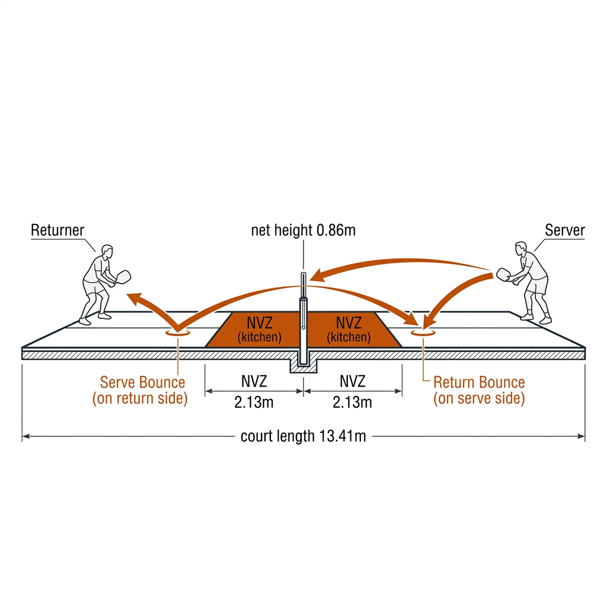
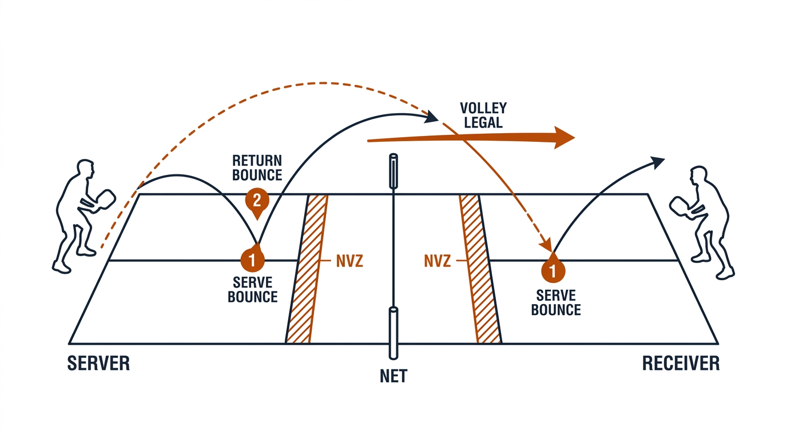
Most of these rules are not directly observable: a line call needs ball-ground contact; a kitchen fault needs foot position and momentum; a double-bounce violation needs bounce counting. Section 3.6 labels which predicates vision can ground and which it cannot.
3.2b The NVZ as Formal Geometry: The Fault_NVZ Predicate
The non-volley zone is a spatial predicate over a temporal window. It is a 7 ft × 20 ft (2.13 m × 6.08 m) strip on each side of the net, and — the clause that decides real matches — all bounding lines are part of the zone (3.A.4.c). Lines are 2 inches wide; measurements run to the outside edge (3.A.2, 3.A.4.e), so the NVZ boundary sits 7 ft from the net plane: 4.88 m and 8.53 m from each baseline on a 13.41 m court. The zone is explicitly two-dimensional: it "does not extend above the playing surface" (3.A.4.c), which is why reaching over the kitchen to volley is legal while standing on its 2-inch line is not. The rule is a ground-contact predicate, not a volume predicate.
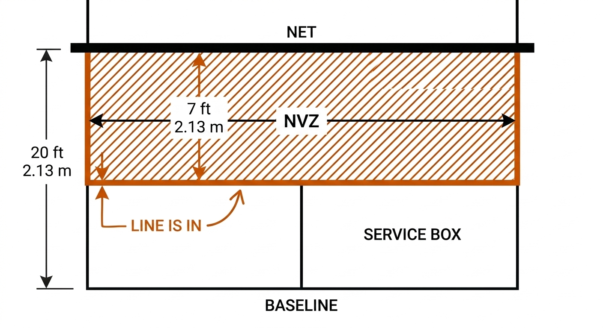
Written as a predicate over a rally, the kitchen fault is:
Fault_NVZ(rally) ⇔ ∃ player p, volley event v:
( NOT InitiatedOutsideNVZ(p, v) ) (11.A)
OR ( Contact(Feet(p) ∪ AnythingTouching(p), NVZ ∪ ∂NVZ)
during ActOfVolleying(p, v) ) (11.A.1)
OR ( MomentumFrom(p, v) carries p into NVZ ∪ ∂NVZ,
even after the ball is dead ) (11.A.2)
OR ( TouchedNVZ(p) AND VolleysAgain(p)
before both feet re-establish outside ) (11.A.3)Two clauses break naive implementations. First, 11.A.1 counts anything touching the player — including a partner — so a doubles player holding their partner at the kitchen line can fault for them. Second, 11.A.2 is, per 9.B.1, the only fault that can occur while the ball is not live: momentum from a volley carries the striker into the zone after the ball is dead. Any pipeline that stops tracking at rally end will miss it; the window must extend past the terminal ball event. Players may call NVZ and service foot faults only on opponents (9.B.3); disagreement produces a replay (9.B.3.b). The line is geometric, but the call is adversarial.
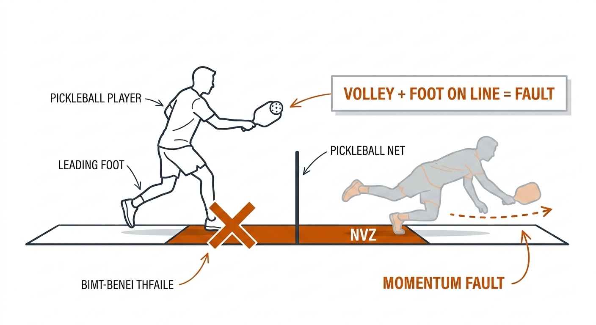
3.2c When Is a Volley a Volley: Stance + Timing
Every NVZ clause hangs on the phrase "the act of volleying," and the rulebook gives it temporal extent: the act begins with the swing, includes ball contact and the follow-through, and — via the momentum rule — persists until the striker's motion from that swing has dissipated. A volley is therefore not a frame; it is a window. For a vision system the predicate decomposes into a stance term and a timing term: foot-zone state sampled across the window (stance), and window bounds anchored to the contact event and the subsequent decay of forward motion (timing). Sampling foot position only at the contact frame is the classic bug — it misses both the follow-through step onto the line and the momentum carry.
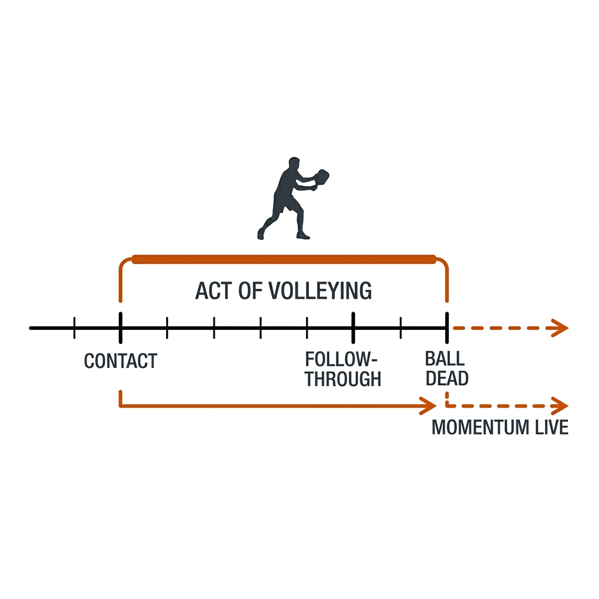
The window's start is easy (swing initiation is visible); its end is judgement. A machine needs an operational surrogate — e.g., closing when the striker's centre-of-mass velocity drops below walking pace, or a fixed time after contact [verify]. Log the surrogate as part of the claim: it is a modelling decision, not a rule. The same stance-plus-timing shape appears in rugby league: a tackle is held-plus-grounded over the referee's "held" call (S11.2), and the PTB is legal only if the foot genuinely plays the ball backwards during the PTB window (S11.10.e). Two sports, one predicate shape: contact event × posture state over a window.
3.3 Rugby League: The Set Grammar
Rugby League is a possession Markov chain: the game is a sequence of sets of six tackles, and the scoring question is what the team does on tackle 5 or 6. The grammar has four rule groups:
- The set: 6 tackles per set. A tackle is complete when the ball carrier is held on the ground (or the referee calls "held"), and the game restarts with a play-the-ball (PTB). After the 6th tackle, possession changes unless the team kicks or scores.
- Field position rules (IRL S11.10, S9.6): the defending team must retreat 10m from the PTB until the ball is played (S11.10.g); a six-again restart resets the tackle count on PTB interference/delay (S11.10–11.11); a 40/20 restarts with a tap (S9.6), not a scrum.
- Scoring (IRL S6.1): try 4, conversion 2, penalty goal 2, field goal 1; match is 80 minutes (S7.1). A team can score from any tackle number; the set grammar controls field position, not scoring opportunities alone.
- Welfare rules (IRL S16.6, S4.2): sin bin = 10-minute temporary suspension; interchange = max 8 from the 17 named, with an 18th man triggered only by HIA/foul-play. These are process rules — they change who is on the field, which changes the visual scene.
The tackle definition is five disjuncts (S11.2): carrier grounded while held, held upright with no progress, carrier succumbs, hand on an already-grounded carrier, or leg lifted. The play-the-ball protocol (S11.10) requires: immediate release, regain feet at the mark, ball lifted clear and placed in front of the foremost foot, one marker opposite, tacklers clear the ruck, a genuine attempt to play the ball backwards with the foot, acting halfback behind, all other defenders retired 10 m or to goal line, and no advance until the ball clears the ruck.
Restart grammar is where the modern game lives. Interference with the PTB or intentional delay resets the count — the "six again" — except ruck interference inside the attacking team's own 40 m zone, which draws a penalty (S11.10 notes, S11.11); the NRL's per-season interpretation memo pins exactly which infringements are set-restart versus penalty [verify current-season NRL]. An accidental breach gives the new team a zero tackle (S11.7.b). An opponent intentionally playing at the ball — including a charge-down — resets the count to one. A 40/20 restarts with a tap (S9.6). Every trajectory model must respect: forward-pass direction is judged relative to the thrower, not the ground (S10 notes). A ball that floats backwards over the ground can still be a forward pass if it leaves the hands forwards relative to a decelerating thrower.
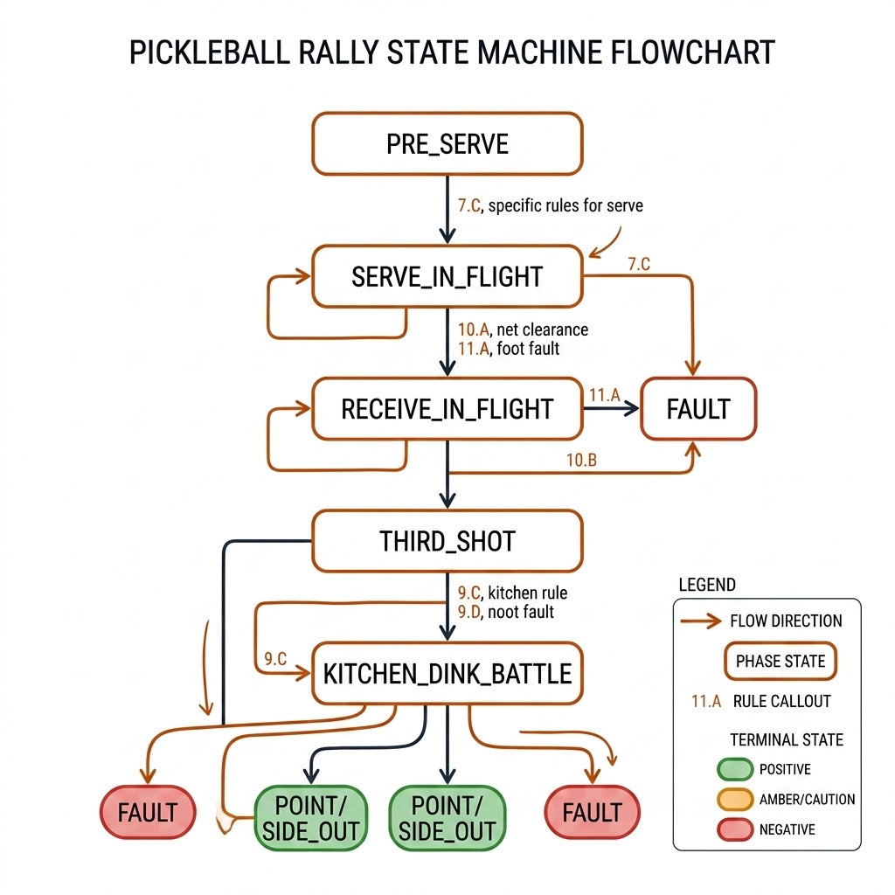
For analytics, the load-bearing structure is the tackle number: it conditions everything. A run on tackle 1 is a field-position play; a run on tackle 6 that fails to kick is a turnover. Modelling expected value without the tackle number is modelling noise. The verified literature agrees: the canonical NRL possession-value model (Kempton et al., 2016) and the Bayesian smooth-surface EPV update (Sawczuk et al., 2024) both condition on tackle state.
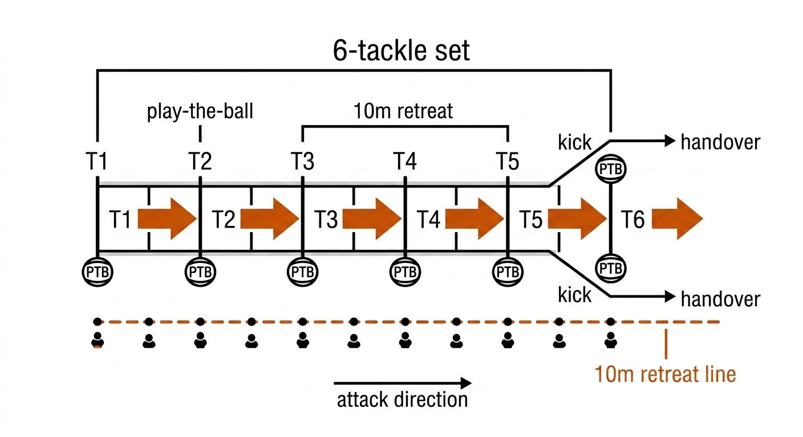
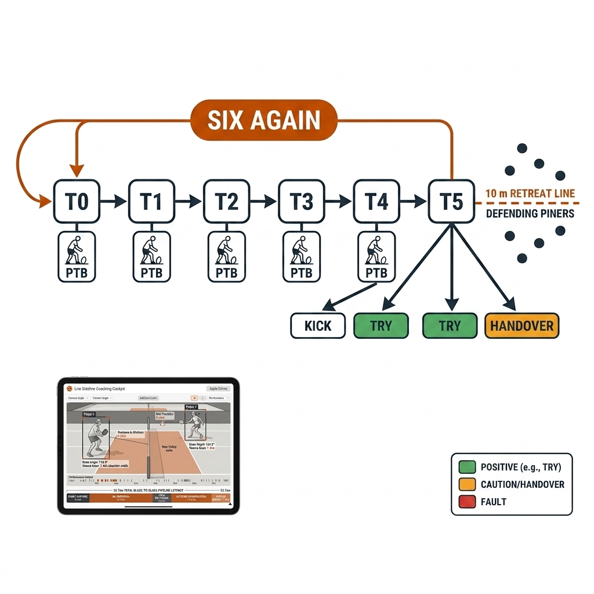
3.3b The Ruck Law and Retreat Compliance (RCM)
The 10 m retreat (S11.10.g) is the spatial predicate that gives the attacking side room to play, and its compliance is measurable from tracking data alone. A useful practitioner metric — our formulation, so treat specific values as [verify] until validated against league tracking data — is retreat compliance:
RCM(set) = |{ d ∈ defenders : dist(d, ptb_mark) ≥ 10 m
at the frame the ball clears the ruck }| / |defenders|The reference point is the play-the-ball mark, not the tackle location; the sampling instant is the ball-clears-ruck event; defenders on their own goal line satisfy the rule without the full 10 m (S11.10.g). Broadcast parallax makes per-camera field calibration (chapters 6–7) a prerequisite — an uncalibrated RCM measures lens geometry, not discipline. The companion metric is ruck speed (tackle-effected to ball-clear). It is the single most valuable CV-only number in the sport [concept-transfer], conditioning line speed and the value of the following tackle in Kempton et al. (2016) and Sawczuk et al. (2024).
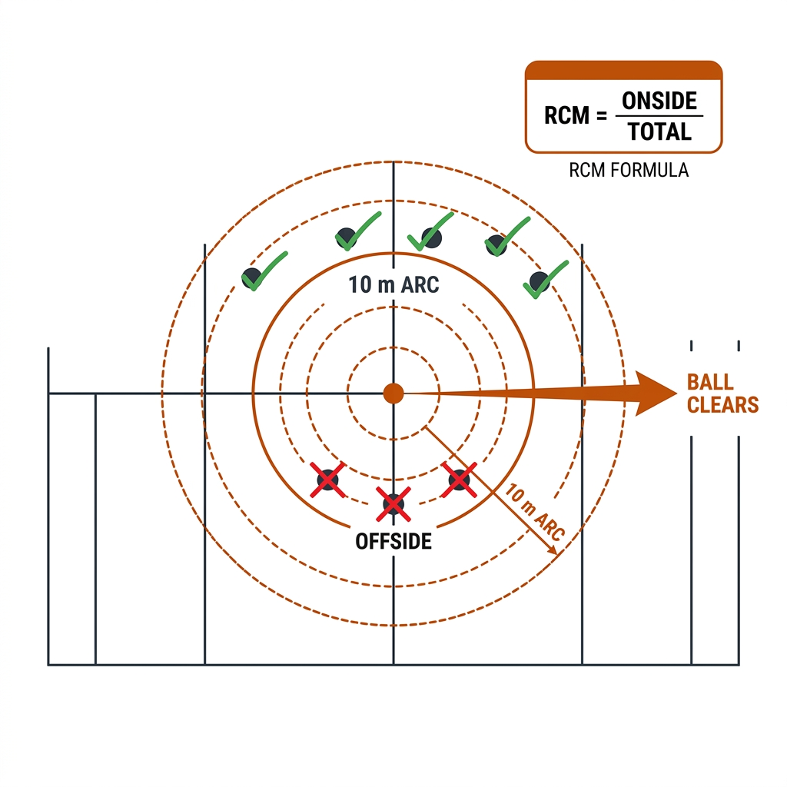
3.4 The Grammar in Code: Executable State Machines (W1.1 Lab)
Our lab encodes both grammars as Python state machines. The pickleball machine tracks the serve/receive/third-shot phases, bounce count (double-bounce rule), server number (doubles side-out), and NVZ enforcement:
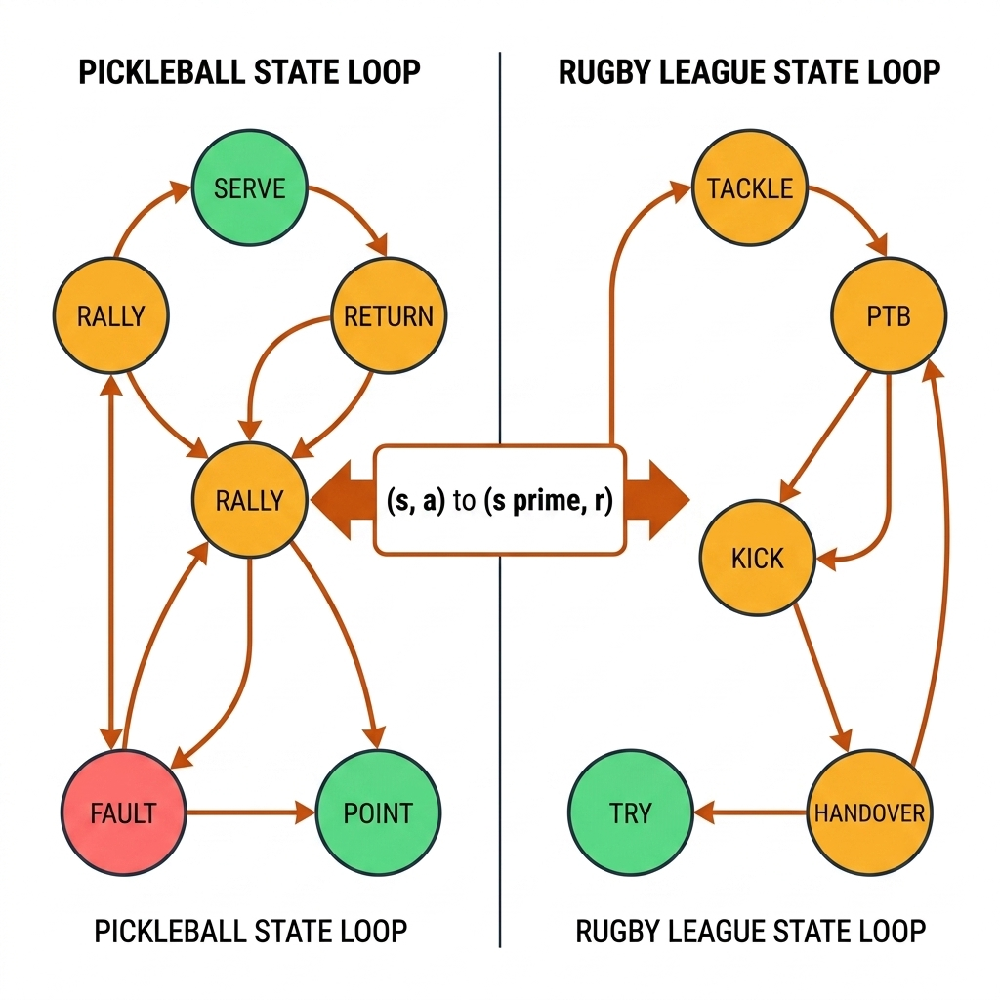
(state, event) → (state', reward) machines. Pickleball's events are mostly ball/pose contacts; rugby league's events include referee-gated transitions such as the held call and the six-again signal.from enum import Enum
class PB_Phase(str, Enum):
PRE_SERVE = "PRE_SERVE"
SERVE_IN_FLIGHT = "SERVE_IN_FLIGHT"
RECEIVE_IN_FLIGHT = "RECEIVE_IN_FLIGHT"
RALLY = "RALLY" # double-bounce satisfied
SIDE_OUT = "SIDE_OUT"
POINT = "POINT"
FAULT = "FAULT"
class PickleballMachine:
def __init__(self):
self.phase = PB_Phase.PRE_SERVE
self.bounce_count = 0
self.server = 1
self.serve_score = 0
self.recv_score = 0
def step(self, event: str, **kw):
if event == "bounce":
self.bounce_count += 1
elif event == "volley":
if self.phase != PB_Phase.RALLY:
return self._terminal(PB_Phase.FAULT,
"volley before double-bounce")
if kw.get("foot_in_nvz") or kw.get("momentum_into_nvz"):
return self._terminal(PB_Phase.FAULT, "NVZ violation")
elif event == "serve":
self.phase, self.bounce_count = PB_Phase.SERVE_IN_FLIGHT, 0
elif event == "return":
self.phase = PB_Phase.RECEIVE_IN_FLIGHT
elif event == "third_shot":
self.phase = PB_Phase.RALLY
elif event == "win":
return self._terminal(PB_Phase.POINT, "server wins")
return {"event": event, "phase": self.phase,
"bounces": self.bounce_count}
def _terminal(self, phase: PB_Phase, reason: str):
if phase == PB_Phase.POINT:
self.serve_score += 1
else:
if self.server == 1:
self.server = 2
else:
self.server = 1
self.serve_score, self.recv_score = \
self.recv_score, self.serve_score
self.phase = PB_Phase.PRE_SERVE
return {"to": phase, "reason": reason,
"score": [self.serve_score, self.recv_score]}
Two things separate this from a toy tracker. First, the event layer is agnostic: the machine queries predicates supplied by the vision layer (foot_in_nvz, momentum_into_nvz). The detector emits raw state; the engine decides. Second, the scoring side-out logic is rule-intrinsic: only the serving side scores (4.A), and a second-server loss produces a side-out. A detector that calls "winner" without the server number will corrupt the scoreboard. The grammar enforces the scoreboard.
The rugby league machine encodes the six-tackle grammar, six-again restart, kick-on-6 handover, and welfare events:
class RugbyLeagueMachine:
def __init__(self):
self.tackle_number = 0
self.possession = "A"
self.score = {"A": 0, "B": 0}
def step(self, event: str, **kw):
if event == "tackle":
self.tackle_number += 1
if self.tackle_number >= 6:
return self._handover("sixth tackle - no kick")
elif event in ("six_again", "zero_tackle"):
# six_again: S11.11; zero_tackle: S11.7.b
self.tackle_number = 0
elif event == "kick" and self.tackle_number >= 5:
self._swap(); self.tackle_number = 0
return {"event": "possession_change", "tackle": 0}
elif event == "try":
self.score[self.possession] += 4
elif event in ("conversion", "penalty_goal"):
self.score[self.possession] += 2
elif event == "field_goal":
self.score[self.possession] += 1
elif event == "sin_bin":
return {"event": "sin_bin", "note": "10 min"}
return {"event": event, "tackle": self.tackle_number,
"score": self.score}
def _handover(self, reason: str):
self._swap(); self.tackle_number = 0
return {"to": "HANDOVER", "reason": reason,
"possession": self.possession}
def _swap(self):
self.possession = "B" if self.possession == "A" else "A"
The same separation appears in rugby league: the machine accepts the held event and advances the count; it does not detect "held" from pixels. The set restart, zero tackle, and sin bin come from the referee signal or official feed. The machine's value is state integrity: a scorer who forgets to reset the count after "six again" corrupts every subsequent tackle; a state machine enforces the reset and records the discrepancy. Detector and rule layers have different failure modes and verification requirements.
3.4b A Common Vocabulary: The Grammar Comparison Table
The two grammars are the same formal object. The table maps one sport's construct to the other's — a concept-transfer tool.
| Dimension | Pickleball (USAP 2026) | Rugby League (IRL 2026) |
|---|---|---|
| Terminal unit | Point — every rally ends in fault, point, or replay | Set — six tackles ending in try, kick, handover, or error |
| Chain type | Point-terminating Markov chain; absorbing states are POINT_A, POINT_B, REPLAY |
Possession Markov chain; absorbing states are TRY, GOAL_KICK, HANDOVER, PENALTY |
| State space | Small: scores, server #1/#2, side, phase ∈ {serve, return, third-shot, rally} | Large: tackle #0–5, field position (x,y), ruck speed, marker/10 m compliance, possession |
| Transition trigger | Ball contacts and spatial predicates (NVZ, line landing) | Referee-gated events (held, six-again) and spatial predicates (touch, 10 m) |
| Reset transitions | Replay — rally voided, state unchanged (9.C.2, 13.A.1) | Set restart / zero tackle — count reset, position retained (S11.11, S11.7.b) |
| Hidden state | Almost none; self-officiated calls are observable | Significant: advantage, held judgement, HIA status |
| Spatial predicate example | Fault_NVZ(p, v) — foot or momentum in zone during volley | RCM(set) — defenders ≥ 10 m at ball-clears-ruck instant |
(state, event) → (state', reward) machines; the differences are state size, event triggers, and hidden state.3.4c Rules as Code: Eight Executable Predicates
The grammar pays off only when individual rules become executable predicates — functions over observed events that return fault, replay, or nothing. The eight use cases below are the officiating core of both rulebooks, written as case studies: the formal rule as the governing body states it, the predicate a machine can evaluate, the figure, the dual-sport application, and the officiating payoff. Each predicate tags its inputs vision-gated (a detector can supply them) or referee-gated (they must come from the official feed — section 3.6's boundary applies). Rules cited are source-backed from the USAP 2026 rulebook and the IRL 2026 laws; thresholds marked [verify] are practitioner operationalisations, not rulebook text.
UC 01 — The NVZ Foot-Fault Predicate (USAP 11.A, 9.B)
The formal rule. All volleys must be initiated outside the non-volley zone, and any contact by the striker — or anything touching the striker — with the zone or its lines during the act of volleying is a fault (11.A.1); momentum carrying the striker in is a fault even after the ball is dead (11.A.2, per 9.B.1 the only fault that can occur while the ball is not live); re-volleying before both feet re-establish outside is a fault (11.A.3). The full four-disjunct formula is section 3.2b; the officiating core is the first disjunct:
FootFault_NVZ(p, v) ⇔ ActOfVolleying(p, v)
∧ Contact( Feet(p) ∪ AnythingTouching(p), NVZ ∪ ∂NVZ ) (11.A.1)Two properties make this the hardest officiating predicate in the sport: the line itself is inside the zone (3.A.4.c), so the test is a 2-inch pixel-precision contact at the volley window, not a zone-membership test; and players may call it only on opponents (9.B.3), with disagreement producing a replay (9.B.3.b) — the machine's output is evidence in an adversarial call, not the call itself.
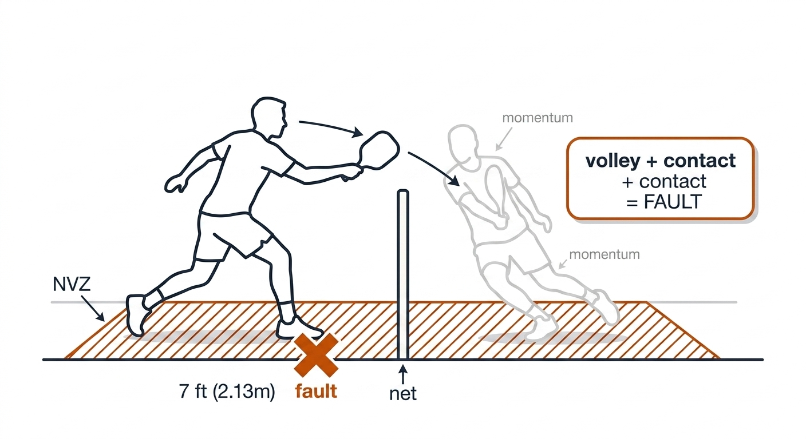
Officiating payoff: an automated foot-fault flag converts the most-disputed self-call in pickleball into a reviewable clip with the contact frame marked — and the same contact-over-window machinery is what the rugby league video referee needs for grounding decisions.
UC 02 — The Double-Bounce Predicate (USAP 10.A, 10.B)
The formal rule. The serve must bounce before the receiver strikes it (10.A.1) and the return of serve must bounce before the serving side strikes it (10.A.2); after those two events the rally is open. Separately, a ball not returned before its second bounce is a fault on the side that let it die (10.B.1). This is the cleanest vision-verifiable rule in either sport: two bounce counters and a hit-order check, no pose required.
Fault_DoubleBounce(rally) ⇔
HitBy(receiver, serve) BEFORE Bounce(serve) (10.A.1)
OR HitBy(serving, return) BEFORE Bounce(return) (10.A.2)
OR SecondBounce(ball) with no intervening hit (10.B.1)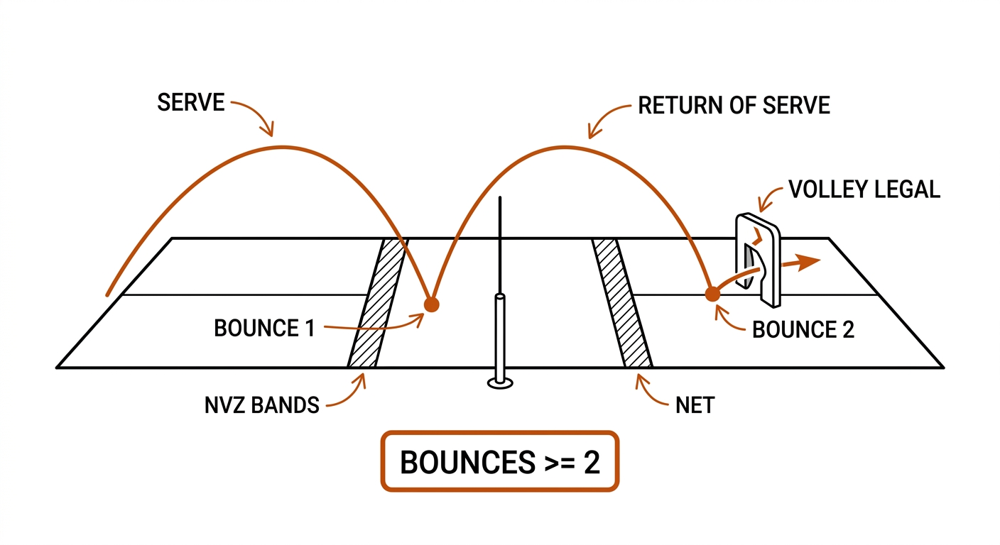
Officiating payoff: bounce-event detection (chapter 12) feeding this predicate automates the most common beginner fault and — via 10.B.1 — awards points on unreturned balls without a human watching bounce counts; the identical event-ordering template verifies ruck sequence integrity in rugby league.
UC 03 — The 10 m Retreat Predicate (IRL S11.10.g)
The formal rule. At the play-the-ball, every defender who is not the marker must retire 10 m from the mark or to their own goal line, and may not advance until the ball clears the ruck (S11.10.g–h). Section 3.3b defines the RCM compliance metric; the officiating predicate is its per-defender core, sampled at the ball-clears-ruck instant:
RetreatFault(d, ptb) ⇔ Defender(d) ∧ ¬Marker(d)
∧ dist( pos(d, t_clear), mark(ptb) ) < 10 m
∧ pos(d, t_clear) ∉ GoalLine(defending team) (S11.10.g)The reference is the mark, not the tackle location; the sampling instant is the ruck-clear event, not a frame clock. Broadcast parallax makes per-camera calibration (chapters 6–7) a hard prerequisite — an uncalibrated distance is lens geometry, not discipline [verify against calibrated tracking].
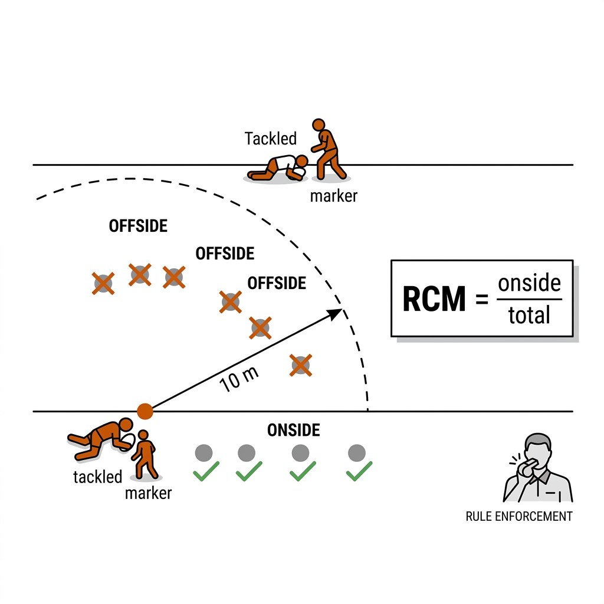
Officiating payoff: referees watch the ruck, not the line; a per-set offside map gives the bunker and coaches an objective retreat record — and it is the same boundary-distance-at-instant template that drives the pickleball kitchen call.
UC 04 — The Six-Tackle Set Grammar Predicate (IRL S11.7)
The formal rule. A team is allowed five successive play-the-balls; the handover occurs on the sixth tackle (S11.7.a). Possession changes from an accidental breach restart at tackle zero (S11.7.b); an opponent intentionally playing at the ball — including a charge-down — resets the count to one (S11.7 notes); ruck interference or delay resets the count entirely, the six-again (S11.10 notes, S11.11), except inside the attacking team's own 40 m zone, which draws a penalty. The set is a counter with three reset transitions:
Handover(set) ⇔ TackleEffected ∧ count = 6 ∧ ¬KickInFlight (S11.7.a)
ZeroTackle(set) ⇔ PossessionChange(accidental breach) (S11.7.b)
CountReset(set) ⇔ SixAgainSignal ∨ OpponentPlaysAtBall (S11.11, S11.7 notes)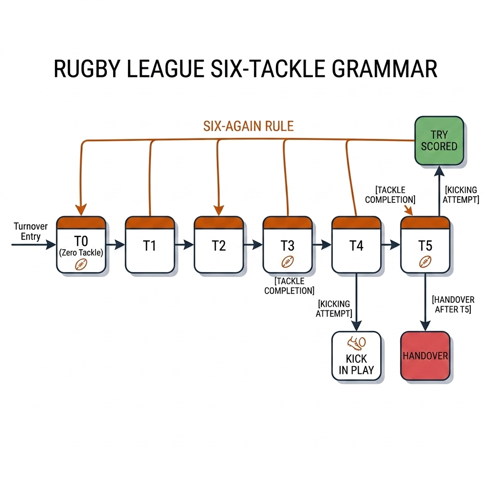
Officiating payoff: the count is the scoreboard's hidden state — a missed six-again reset corrupts every downstream stat and the fifth-tackle decision; an explicit counter machine makes the reset auditable, and the pickleball server-number counter is the same pattern with two states instead of six.
UC 05 — The Volley-Window Predicate (USAP 9.B, 11.A)
The formal rule. Every NVZ clause hangs on "the act of volleying," which the rulebook gives temporal extent: it begins with the swing, includes contact and follow-through, and — via momentum — persists until the motion from the swing dissipates. Section 3.2c gives the stance-plus-timing decomposition; the predicate itself is a window constructor:
VolleyWindow(p) = [ t_swing(p), t_momentum_dissipated(p) ]
ActOfVolleying(p, t) ⇔ t ∈ VolleyWindow(p) (9.B / 11.A)The window's start is observable (swing initiation); its end is judgement, so the machine uses an operational surrogate — centre-of-mass velocity below walking pace, or a fixed post-contact horizon [verify]. The surrogate is a modelling decision and must be logged with the claim; it is not rule text.
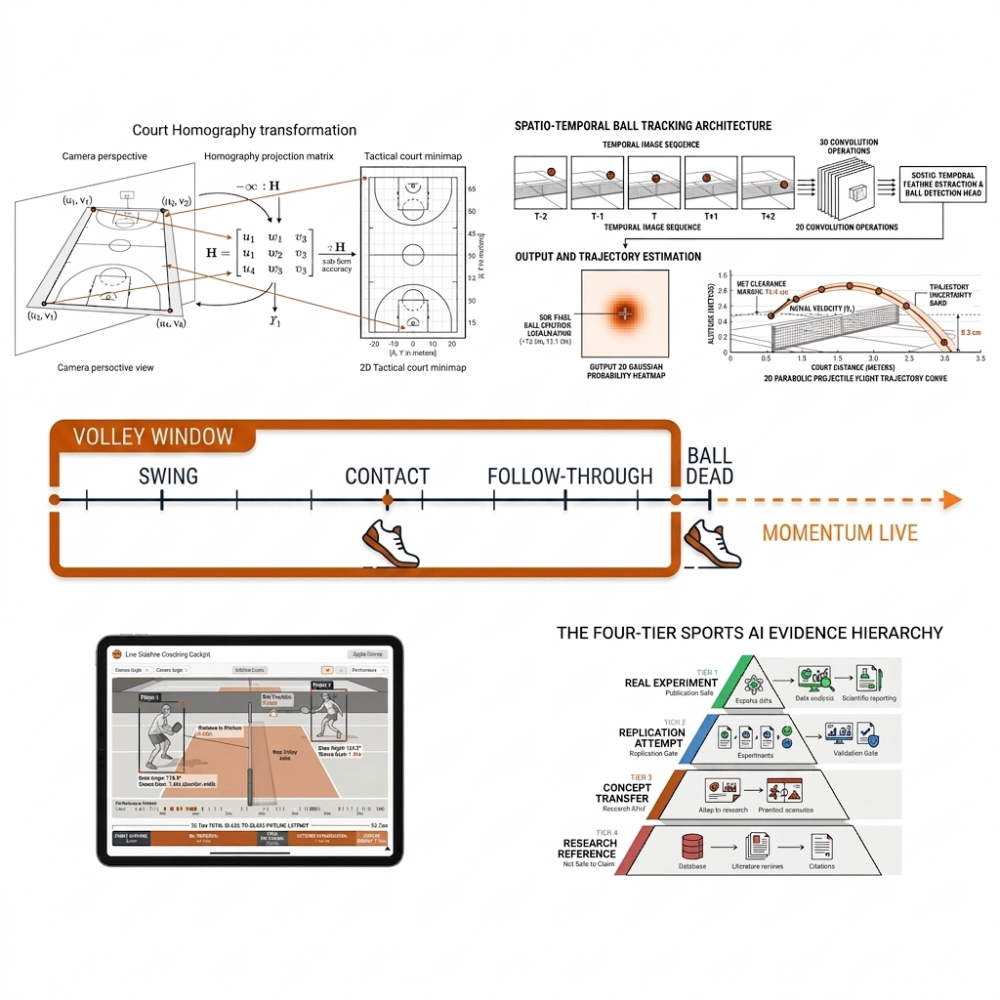
Officiating payoff: fixing the window definition removes the "when did the volley end" dispute from every kitchen review, and the same window-constructor pattern is what makes a rugby league tackle reviewable: held-plus-grounded over the referee's call window.
UC 06 — The High-Tackle Predicate (IRL S15.b) — feeds C10 UC08
The formal rule. Contact with the head or neck — intentional, reckless, or careless — is misconduct (S15.b), sanctionable by penalty, sin bin, or dismissal (S16.6). The predicate splits into a geometric term that vision can ground and an intent-grading term that stays with the officials:
HighTackle(tackler, carrier) ⇔
ContactPoint(tackler → carrier) ∈ HeadNeckRegion(carrier) [vision]
∧ Grading ∈ { intentional, reckless, careless } (S15.b) [referee]Chapter 10's UC 08 supplies the measurement layer — 3D contact height from pose reconstruction — while this chapter supplies the rule shape: the vision term is a region-membership test on the carrier's skeleton, and the grading term is referee-gated and enters from the official feed. The honest architecture never infers the second disjunct from pixels.
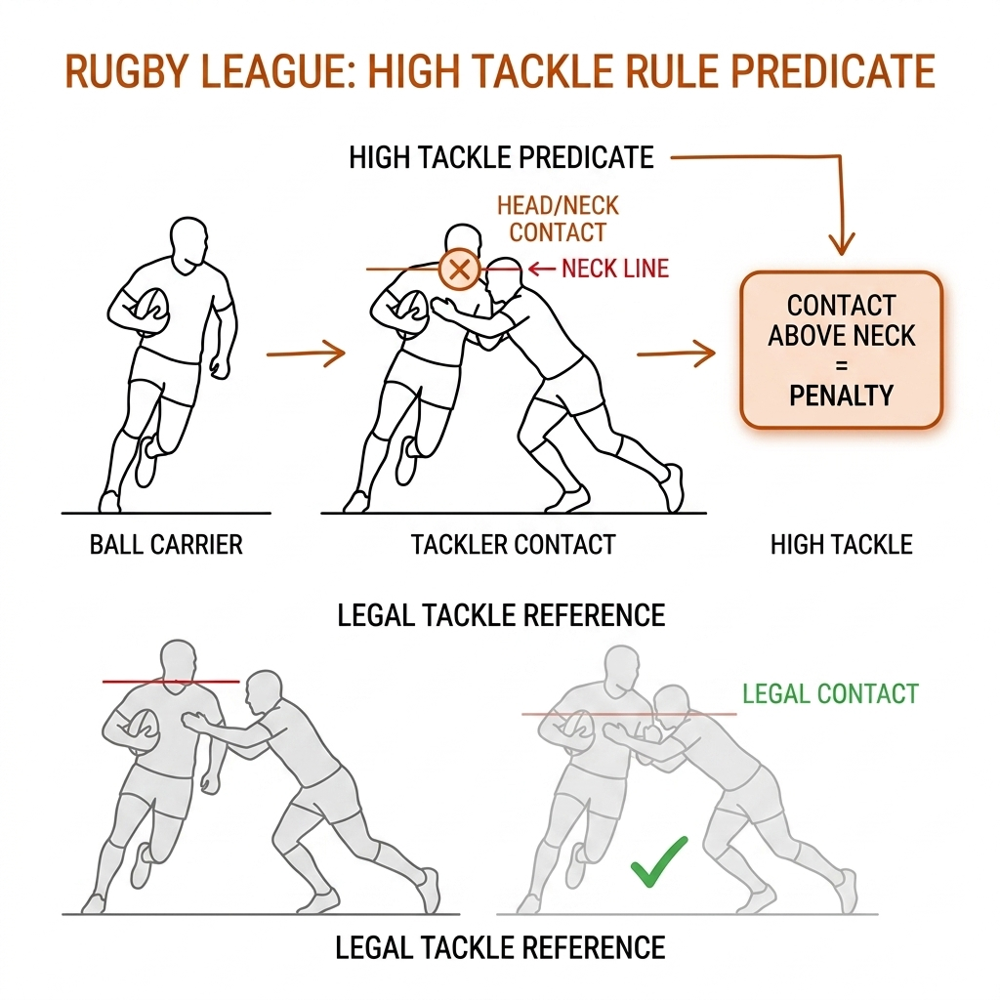
Officiating payoff: head-contact flags with measured contact height give the bunker an objective first screen on the sport's most consequential welfare rule — and the region-membership template doubles as the pickleball serve-motion check (wrist and waist regions, 7.C.2–3).
UC 07 — The Out-of-Bounds Predicate (USAP 8.B–8.E, IRL S9)
The formal rule, both sports. In pickleball a ball is in if it contacts any part of the court or lines, out otherwise — except that the NVZ and its line are out on the serve only (8.B, 8.C), and a player may call out only when they "can clearly see a space between the line and the ball" (8.E — a perceptual sufficiency threshold on the observer). In rugby league the ball or ball-carrier touching ground beyond the touchline puts the ball in touch (S9), with special zones for the 40/20: kicked from inside the own 40 m line, bouncing into touch between the opponent's 20 m line and goal line earns the kicking team a tap restart (S9.6).
PB: Out(ball) ⇔ LandingPoint(ball) ∩ (Court ∪ ∂Court) = ∅ (8.B/8.C)
∧ ( serve ⇒ NVZ ∪ ∂NVZ treated as out ) (8.C)
RL: InTouch ⇔ Contact(ball ∨ carrier, ground beyond touchline) (S9)
RL: FortyTwenty ⇔ KickOrigin ∈ Own40 ∧ Bounce
∧ TouchEntry ∈ (Opp20, GoalLine) (S9.6)The 8.E "see a space" clause is the remarkable one: it defines the line call as a pixel-gap test — exactly what a calibrated camera computes, and exactly where single-camera systems fail on motion blur at the bounce.
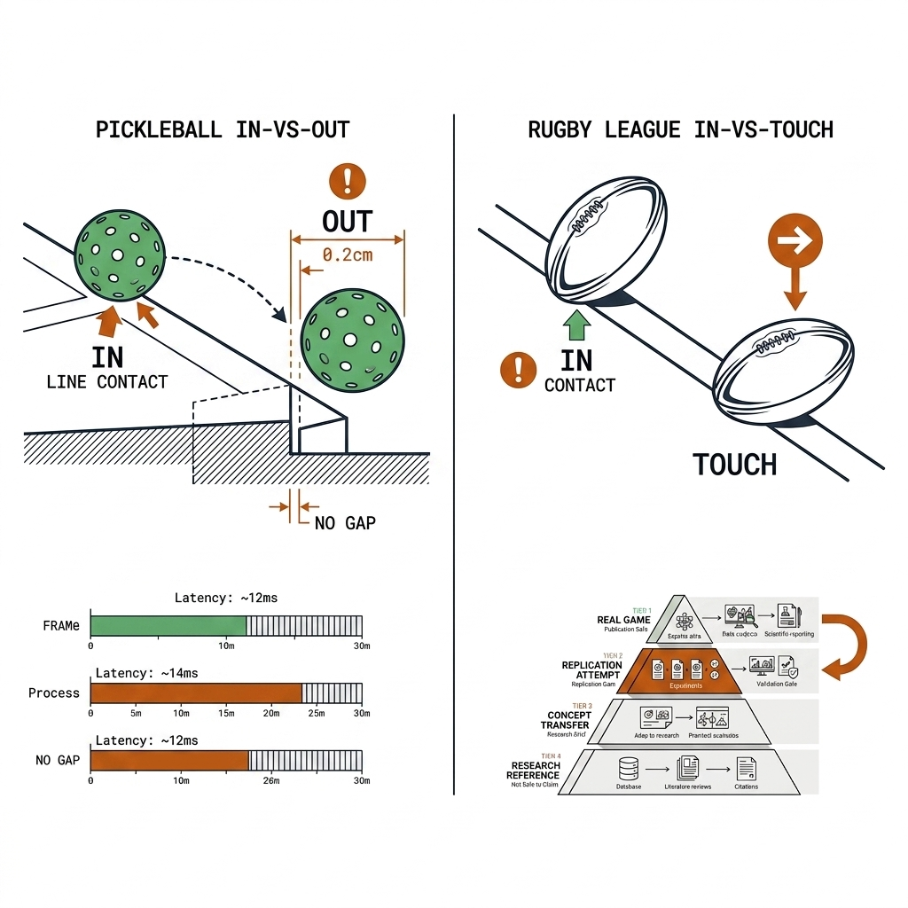
Officiating payoff: the gap test automates cleanly at Hawk-Eye grade and honestly degrades on consumer video — the system should report the measured gap with uncertainty rather than a binary call, and the 40/20 composition is fully automatic from tracking data alone.
UC 08 — Rules Conflict Resolution: Variant as Configuration
The formal problem. There is no single rulebook per sport. Pickleball runs the 2026 USA Pickleball rulebook alongside the UPA-A tour's own ruleset (drop-serve and paddle-testing differences [source-backed; verify current UPA-A text]); rugby league runs the IRL 2026 International Laws with the NRL's season-by-season ARLC interpretations layered on top — the exact set-restart-versus-penalty list, HIA handling, and bunker eligibility shift between seasons [verify current-season NRL memo]. A hardcoded engine is wrong somewhere by construction. The resolution is architectural, from section 3.6b: the engine is invariant; the transition table is configuration.
RulesEngine(variant) = Engine ∘ TransitionTable(variant)
variant_pb ∈ { USAP_2026, UPA_A } -- let serve, drop serve, paddle tests
variant_rl ∈ { IRL_2026, NRL_season } -- six-again list, HIA, bunker scope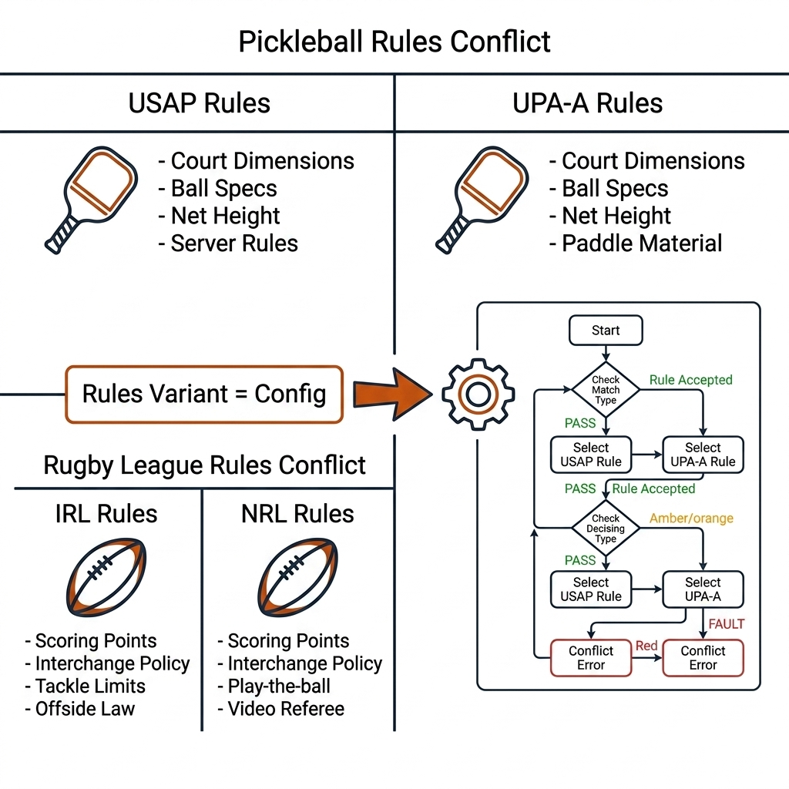
Officiating payoff: one team owns vision, another owns the rulebook, and they agree only on the event schema — a league switch is a config diff reviewed against quoted rule text, never a code change shipped mid-season.
What this adds to the pipeline. These eight predicates are the rule layer that later chapters feed: calibration (chapters 6–7) supplies the coordinates, pose (chapter 11) supplies feet and contact regions, ball tracking (chapter 12) supplies bounces and landing points, eventing (chapter 19) supplies the detected-event stream, and the cockpit (chapter 28) renders the flags. UC 06's contact-height term is measured by chapter 10's UC 08; UC 04's count drives the expected-value models of chapter 22. The detector–engine split (section 3.4) is what lets every one of them stay unit-testable against the rulebook text quoted here.
3.5 Lab Output (W1.1)
Canonical scenarios from experiments/c03-rules/outputs/state-machines.json:
| Scenario | Expected | Machine Output |
|---|---|---|
| Legal rally: serve → bounce → return → bounce → third shot → volley → win | Point to serving side | PASS — volley only after double-bounce (RALLY phase) |
| Kitchen fault: volley with foot in NVZ | Fault, side-out, server swap | PASS — FAULT: NVZ violation, server 1 → 2 |
| Momentum kitchen fault: legal volley, then striker steps into kitchen after ball dead | Fault, side-out, server swap | PASS — momentum_into_nvz=True post-dead fault (11.A.2) |
| Six-again: 3 tackles + six_again + 3 tackles | Count resets to 0, possession unchanged | PASS — six_again resets tackle count without swapping possession |
| Zero tackle: turnover from accidental breach, then 6 tackles | New possession starts at tackle 0 | PASS — zero_tackle sets count to 0 |
| Sixth-tackle error: 6 tackles, no kick | Handover | PASS — handover on sixth tackle - no kick, possession swaps |
| RCM predicate: 4 of 7 defenders behind 10 m arc at ball-clear | RCM = 0.57 | source-backed — formula definition; needs league tracking to validate the 10 m operationalisation |
3.6 The Vision Boundary: What Rules You Cannot Verify
The executable grammar also makes the limits explicit. A table that every practitioner should keep on their wall:
| Rule | Observable? | What Is Needed |
|---|---|---|
| Serve legality (underhand, waist, behind baseline) | Partially | Pose + paddle position at contact frame (chapters 11–12); waist height is 3D |
| Ball in/out (line call) | No — 2D only | Ball-ground contact and plane intersection (multi-view, chapter 14) |
| Kitchen foot fault | Partially | Foot position vs NVZ line + momentum during volley; foot-ground plane |
| Let (net contact) | Yes (visual) | Ball trajectory crossing net plane (chapter 12) |
| Double-bounce carried | Yes (visual) | Bounce events from ball trajectory (chapter 12) |
| Rugby held tackle / PTB | Partially | Ball-carrier-ground contact + referee call (audio chapter 15) |
| Rugby 10m retreat | Yes (visual) | Field calibration + foot position (chapters 6–7) |
| Rugby HIA / sin bin | No | Process rules; only the outcome (player off) is visible |
3.6b Honest Caveats: Rules Differ by Organisation
The rulebook is not a universal constant. In pickleball, the 2026 USA Pickleball rulebook is the source cited here, but the UPA-A tour runs its own ruleset with differences in drop-serve and paddle testing [source-backed]. In rugby league, the IRL 2026 laws are the base text, and the NRL Telstra Premiership adopts them with ARLC-approved interpretations that shift season to season — the exact set-restart versus penalty list, HIA and bunker protocols are not pinned here and are flagged [verify]. The code runs the IRL grammar; a league-specific build swaps the transition table, not the engine.
Ship the rule variant as configuration. The USAP/UPA-A selector and the IRL/NRL selector change the event alphabet (let serves live, six-again list, bunker-review eligibility). The separation of rule engine from detector makes this manageable: one team owns vision, another owns the rulebook, and they agree on the event schema.
3.7 What I Would Measure Next
Recipe: compile any rulebook chapter into an executable grammar:
- State tuple. Only variables the rulebook uses: pickleball
(scores, server_number, serving_team, phase); rugby league(tackle_number, possession, position, clock, ruck_speed). - Event alphabet. Serve, bounce, volley, six_again, tackle, kick, try, sin_bin, etc. Tag each vision-gated, referee-gated, or unknown.
- ECA transitions. For every rule,
on(event) where (predicate) do (transition | fault | replay), with rule numbers as comments. - Separate detector from engine. The detector emits raw predicates; the engine decides. The detector says
foot_in_nvz=True; the engine evaluates Fault_NVZ. - Rule variant as configuration. USAP vs UPA-A, IRL vs NRL season. Do not hardcode interpretation memos.
- Unit-test against canonical scenarios. Legal rally, kitchen fault, double-bounce violation, six-again, zero tackle, handover on six.
- Bounce detector on pb-003 (chapter 12 lab) to feed the double-bounce check — measured on lab ball-trajectory output.
- Foot-position samples against kitchen line on 100 frames for the foot-fault gate.
- Tackle-event classification on rugby clips to drive the set counter.
3.8 Sources
- USA Pickleball Official Rulebook (2026) —
usapickleball.org/rules/; Equipment Standards Manual Rev 3 (Jan 2025): ball 2.87–2.97in, 22.1–26.5g, 26–40 holes; paddle combined L+W ≤ 24in. - NRL Laws of the Game — NRL.com official match rules.
- Kempton et al. 2016, J Sports Sci (768 NRL matches, expected possession value).
- Sawczuk et al. 2024, PLOS ONE — Bayesian-mixture EPV for rugby league (arXiv 2212.10904).
- Lab:
lab/w1_lab_rules.py→experiments/c03-rules/outputs/state-machines.json.